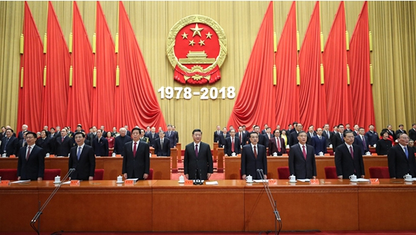
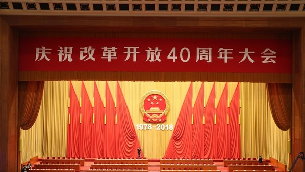
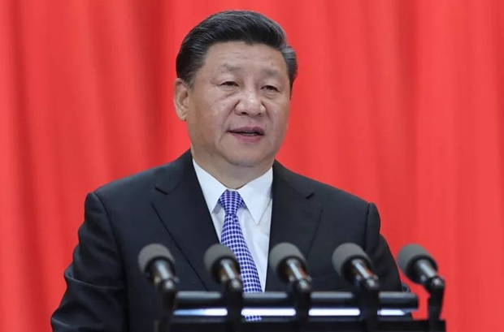
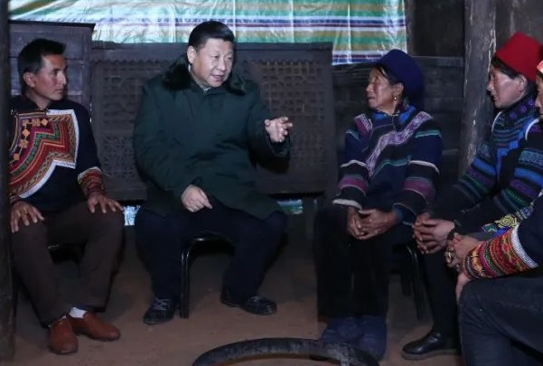
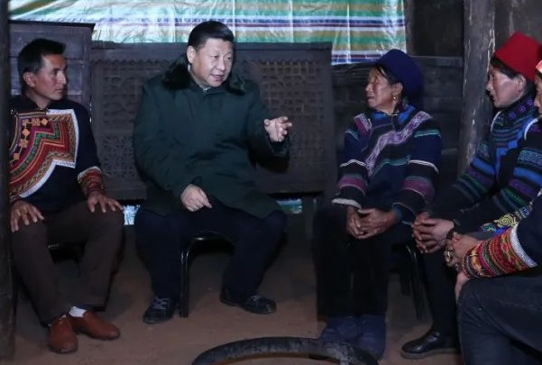
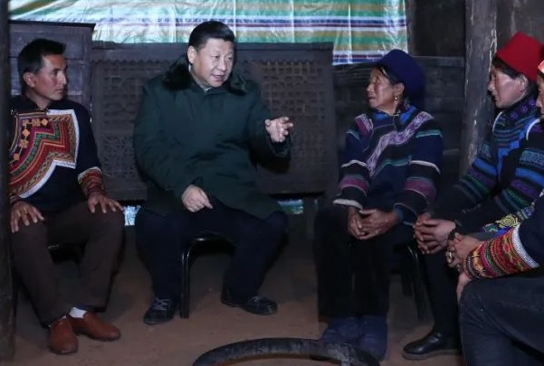

改革开放四十周年
2018年是中国改革开放40周年。1978年5月，一篇名为《实践是检验真理的唯一标准》的特约评论员文章，在《光明日报》一版刊发。它掀起了席卷中国的 真理标准大讨论，成为那支撬动改革开放的哲学杠杆。短短六千字，激荡四十年。为改革开放迈出了一大步。
2017年9月，中国国家主席习近平出席金砖国家工商论坛开幕式并发表主旨演讲。习近平说，2018年要隆重纪念改革开放40周年。
2018年11月13日，“伟大的变革——庆祝改革开放40周年大型展览”在国家博物馆开幕。12月2日起，《我们一起走过——致敬改革开放40周年》在 央视综合频道播出。12月14日，庆祝改革开放40周年文艺晚会《我们的四十年》在北京人民大会堂举行。
2018年12月18日10时，庆祝改革开放40周年大会在人民大会堂举行。
同时，改革开放四十周年列入2018年度十大流行语。
习近平重要讲话

 


1、四个“基于”
我们党作出实行改革开放的历史性决策，是基于对党和国家前途命运的深刻把握，是基于对社会主义革命和建设实践的深刻总结，是基于对时代潮流的深刻洞察，是基于对人民群众期盼和需要的深刻体悟。
2、对改革开放的评价
改革开放是我们党的一次伟大觉醒。
改革开放是中国人民和中华民族发展史上一次伟大革命。
3、三大里程碑
建立中国共产党、成立中华人民共和国、推进改革开放和中国特色社会主义事业，是五四运动以来我国发生的三大历史性事件，是近代以来实现中华民族伟大复兴的三大里程碑。
4、三个“伟大飞跃”
40年春风化雨、春华秋实，改革开放极大改变了中国的面貌、中华民族的面貌、中国人民的面貌、中国共产党的面貌。
中华民族迎来了从站起来、富起来到强起来的伟大飞跃！
中国特色社会主义迎来了从创立、发展到完善的伟大飞跃！
中国人民迎来了从温饱不足到小康富裕的伟大飞跃！